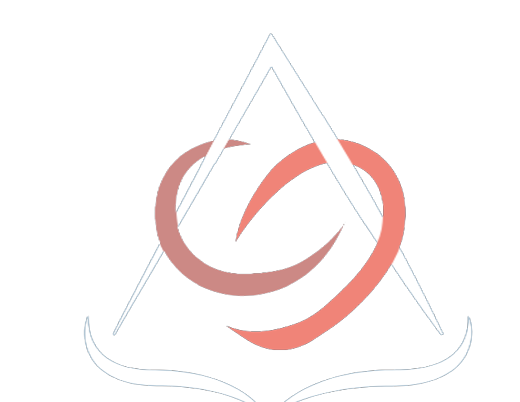
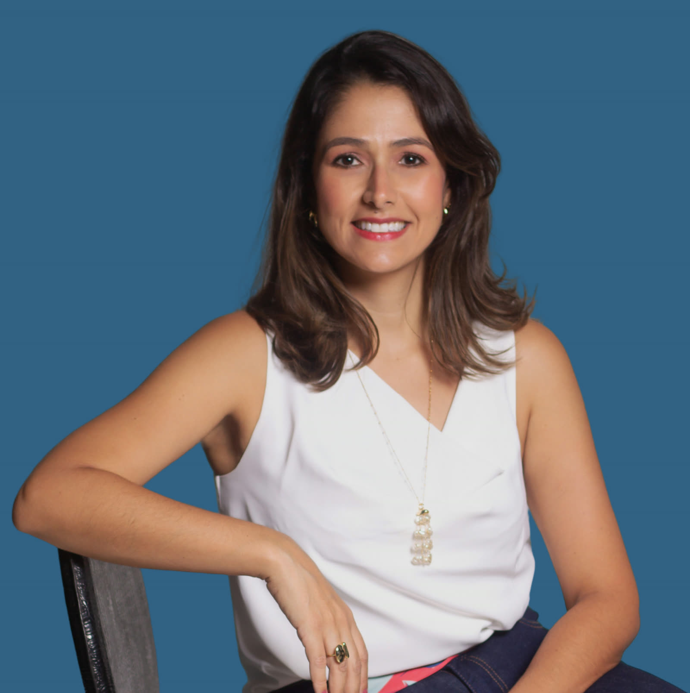
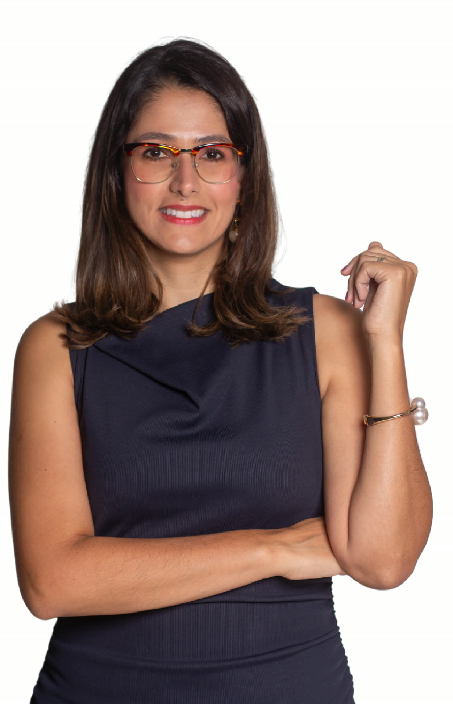

Antes do casamento
Combinar antes de prometer.
O que é de cada um, o que vai ser de vocês, e como fica se um dia não der certo. Dito com carinho, escrito com técnica.
- pacto antenupcial
- regime de bens
- união estável
- pacto pós-nupcial

Izadora TannusAdvogada da família e do patrimônio Vamos conversar?Sou a Izadora Tannus, advogada de família e patrimônio. Herança, divórcio, a empresa da família, o casamento: o papel vem depois. Primeiro, a gente senta.

Eu nunca prometo o que não posso entregar. Holding paga imposto, inventário tem prazo, divórcio tem dor. O que eu garanto é a verdade, o cuidado e a sua família inteira na mesa.
Pediram pra conversar. O instrumento jurídico (inventário, pacto, holding, mediação) é o que sai da conversa, não o que entra nela.
Atendimento online e presencial, em Presidente Prudente. Se a sua frase não está aqui, manda a sua.
É o mesmo desenho da tela de cima, em câmera lenta: os fios enroscados viram uma família em que cada um sabe o seu lugar.
Você me conta. Eu escuto a família inteira, inclusive quem não está na sala e o que ninguém diz em voz alta.
A gente junta quem precisa conversar, na mesma mesa. Eu conduzo. Ninguém sai da sala sem ter sido ouvido.
Cada um entende o que é seu, o que é nosso e até onde vai. Não é excluir ninguém. É incluir com regra.
Só então o papel: o instrumento certo pra decisão que a família tomou, e não uma decisão tomada pra caber num instrumento.
A primeira conversa. Você apresenta o que está acontecendo (os conflitos, as preocupações, o que existe) e eu devolvo um mapa: onde estão os riscos, o que dá pra resolver conversando e o que vai precisar de papel.

Sou advogada há quinze anos. Passei dez deles no direito tributário, quatro em grandes bancas de São Paulo, cuidando de números. Voltei pra Prudente pra cuidar do que sempre me interessou de verdade: gente, e as relações que sustentam ou destroem um patrimônio.
Hoje eu trabalho família e patrimônio de um jeito só: primeiro a relação, depois o instrumento. O jurídico é a minha ferramenta. O trabalho é a conversa que a sua família ainda não teve.
"Manter famílias em harmonia, prosperando unidas."
Os mesmos instrumentos que qualquer escritório oferece. A diferença é a ordem: aqui eles vêm depois.
Combinar antes de prometer.
O que é de cada um, o que vai ser de vocês, e como fica se um dia não der certo. Dito com carinho, escrito com técnica.
Cada um no seu lugar.
Quem manda, quem herda, quem entra e quem sai, antes que a briga de família vire briga de sócios.
Dividir sem se dividir.
Herança é o momento em que a família mais precisa conversar e menos consegue. Eu conduzo essa conversa.
Terminar bem também é cuidar.
O divórcio que os dois assinam, com os filhos protegidos e a vida de cada um preservada. Mediação quando ninguém mais se fala.
Quando o acordo não é possível, eu também atuo no judicial, com a mesma regra: sem prometer o que não posso entregar.
O oitavo ponto do desenho é você. Me manda uma mensagem contando o que está acontecendo. Eu respondo pessoalmente, sem formulário, sem robô.
Chamar no WhatsApp